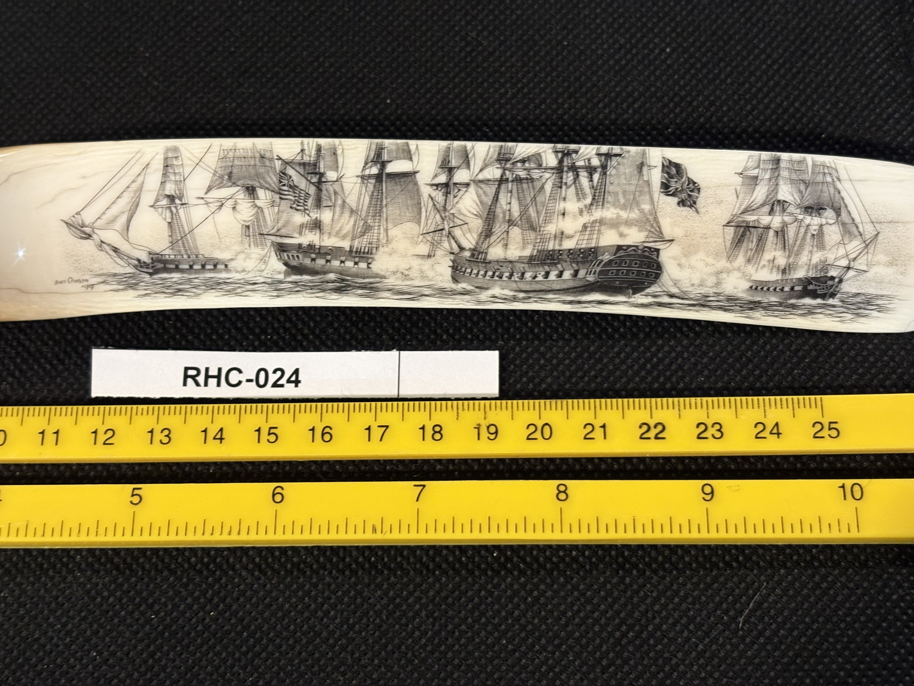
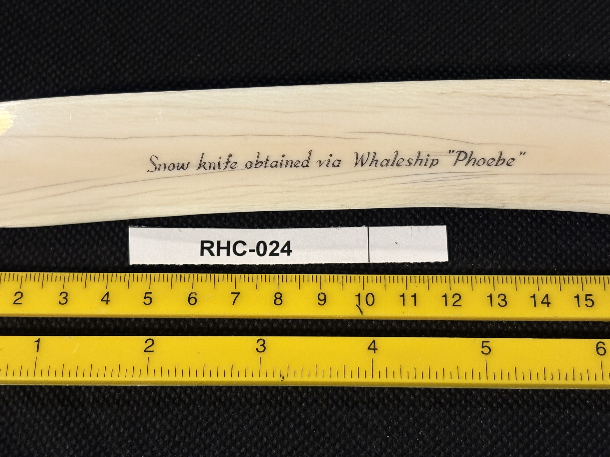

RHC-024 reviewed
Engraved Snow Knife with Multi-Ship Fleet Scene, Inscribed "Obtained via Whaleship 'Phoebe'"


- Object Type
- Snow knife — a long, curved, flat-bladed traditional Arctic tool (used historically by Native Arctic peoples for cutting snow blocks, e.g. for igloo construction), here bearing later scrimshaw decoration; unmounted, displayed flat
- Material
- Presumed walrus ivory or bone, consistent with traditional snow knife construction; not confirmed by any label.
- Dimensions (cm)
- length: 25.5cm, width: 5.5cm — Length (~25.5cm) estimated by combining the overlapping cm scales across two photos (RHC-024-a, RHC-024-b); width (~5.5cm) estimated off the scale in RHC-024-c. By far the longest object in the collection so far.
- Subject Matter
- A row of four to five full-rigged sailing ships/frigates under sail, rendered in fine black ink line work with cross-hatched shading, no color, running along the flat blade portion of the knife. The pointed, undecorated tip end of the blade (cream/tan colored) is left plain.
- Inscriptions
- “Snow knife obtained via Whaleship "Phoebe”
- “Snow knife obtained via Whaleship "Phoebe”
- Artist Attribution
- unknown (original Native Arctic maker of the knife not identified; scrimshaw ship decoration also unsigned)
- Date / Period
- undated; no year given in the inscription
- Mount / Display Stand
- None — displayed flat/unmounted, unlike most other pieces in the collection.
- Color / Technique
- Traditional black ink line scrimshaw engraving with cross-hatched shading, no color
- Condition Notes
- Surface appears clean and intact with visible natural grain/striation lines running along the blade's length; no cracks or damage noted. Not physically examined.
- Distinguishing Features
- First functional/utilitarian Native Arctic tool in the collection (a snow knife) rather than a purely decorative tooth, plaque, or novelty object — and the first piece with an explicit inscribed provenance note naming a specific whaling vessel ('Phoebe'). This raises an interesting two-layered history: an originally utilitarian Native-made object that was later engraved with a whaling-fleet scene, likely by or for a whaler, and explicitly documented as having passed through the whaleship Phoebe.
- Provenance Notes
- Inscription states the knife was 'obtained via Whaleship "Phoebe"' — worth researching whether a whaling vessel by this name can be identified and dated, which could help date the piece and clarify the chain of custody.
- Legal / Regulatory Status
- If confirmed walrus ivory, subject to MMPA restrictions with an exemption for Alaska Native-produced authentic native handicrafts (the base knife may qualify, though the added scrimshaw decoration complicates this). Material not confirmed. Flag for legal review before any loan/sale; not a legal determination.
- Rights / Copyright
- No individual artist signature identified; copyright status undetermined.
- Keywords
- snow knife Arctic tool whaleship Phoebe provenance inscription fleet scene ships unmounted scrimshaw
- Status
- reviewed
- Date Cataloged
- 2026-07-15
Open Research Questions
Research finding (phase 3, 2026-07-15): General web search did not turn up a specific whaling vessel record for 'Phoebe' (the name is common across multiple eras/navies, and a general search engine can't disambiguate against a specialized shipping registry). The authoritative next step is a direct name search on whalinghistory.org's American Offshore Whaling voyage database (New Bedford Whaling Museum / Mystic Seaport), which indexes all known American whaling vessels 1700s-1920s — not accessible via general web search, would need a direct site query.